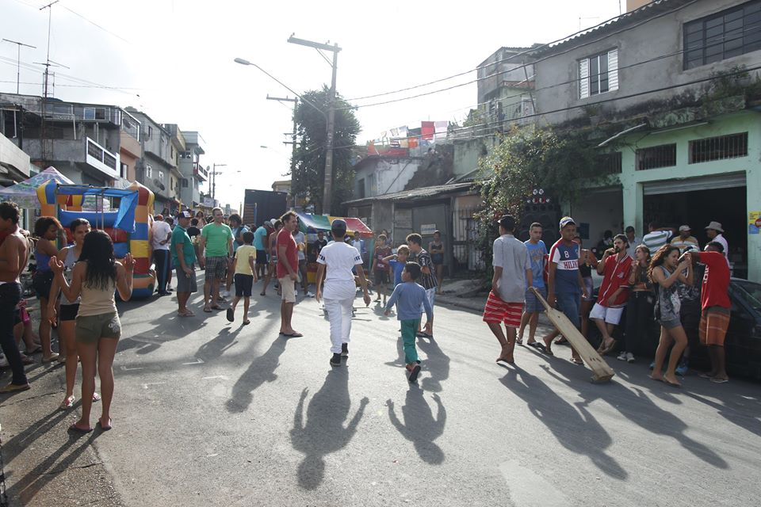
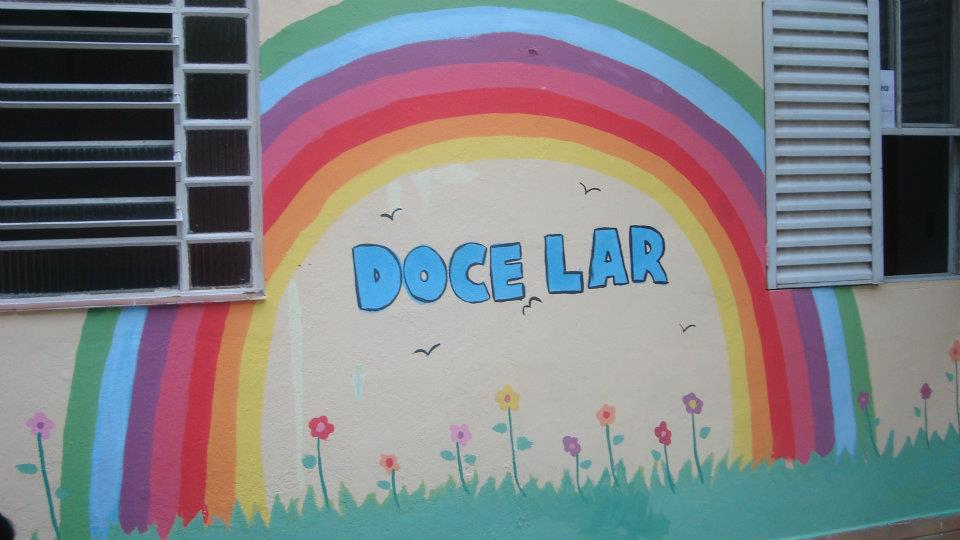

Instituições recomendadas
Bloco do Beco
Decidimos resgatar uma tradição que estava se perdendo em nosso bairro, o carnaval de rua. Com moradores, promovemos encontros e debates sobre a importância de mantermos viva aquela tradição.
Doce Lar
A Associação de Apoio à Criança com Câncer, é uma organização não governamental considerada modelo nacional no tratamento e assistência de crianças com câncer.
Instituto Luz do Amanhã
O Instituto Luz do Amanhã atua como um alicerce para crianças e adolescentes com câncer e suas famílias, ajudamos na busca de todas as possibilidades de cura nesse momento tão difícil.